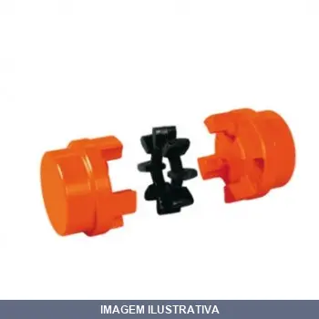
ACOPLADOR MB FC MADEMIL
ACOPLAMENTO MADEFLEX MB 38 Os acoplamentos MADEFLEX MB são compostos por dois cubos simétricos de ferro fundido cinzento, e um elemento elástico alojado entre eles, de Poliuretano de elevada resistência. Esta configuração torna apto ao acoplamento MADEFLEX MB ser torcionalmente elástico e flexível em todas as direções, absorvendo vibrações, choques, desalinhamentos radiais, axiais e angulares; protegendo desta forma os equipamentos acoplados. Estes acoplamentos permitem trabalho em posição horiz
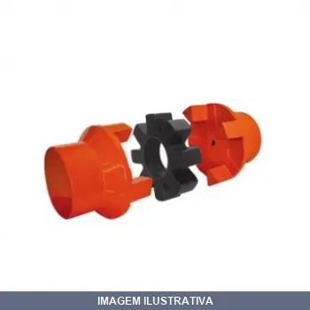
ACOPLADOR MN FC MADEMIL
Indicação de Uso: Acoplamento para eixos de máquinas e equipamentos que necessitam absorção de vibrações e choques. / Material e Resistência: Cubos de ferro fundido cinzento com elemento elástico de poliuretano de alta resistência. / Vantagem Prática: Flexível em todas as direções, compensa desalinhamentos radiais, axiais e angulares, protegendo componentes contra impactos e vibrações.

CORREIA A EM V SUPRIR
CORREIA A 16 TRANSPOWER Correias de borracha para transmissão. Aplicação: Máquinas e equipamentos agrícolas, eletrodomésticos e indústria em geral.
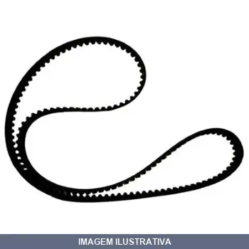
CORREIA A X DENTADA SUPRIR
CORREIA AX TRANSPOWER Correias de borracha para transmissão. Aplicação: Máquinas e equipamentos agrícolas, eletrodomésticos e indústria em geral.

CORREIA B EM V SUPRIR
CORREIA B 23 TRANSPOWER Correias de borracha para transmissão. Aplicação: Máquinas e equipamentos agrícolas, eletrodomésticos e indústria em geral.

CORREIA B103 EM V SUPRIR
CORREIA B 103 TRANSPOWER Correias de borracha para transmissão. Aplicação: Máquinas e equipamentos agrícolas, eletrodomésticos e indústria em geral.

CORREIA B105 EM V SUPRIR
CORREIA B 105 TRANSPOWER Correias de borracha para transmissão. Aplicação: Máquinas e equipamentos agrícolas, eletrodomésticos e indústria em geral.

CORREIA B111 EM V SUPRIR
CORREIA B 111 TRANSPOWER Correias de borracha para transmissão. Aplicação: Máquinas e equipamentos agrícolas, eletrodomésticos e indústria em geral.

CORREIA B112 EM V SUPRIR
CORREIA B 112 TRANSPOWER Correias de borracha para transmissão. Aplicação: Máquinas e equipamentos agrícolas, eletrodomésticos e indústria em geral.
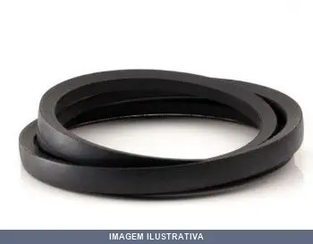
CORREIA B113 EM V SUPRIR
Correia em V para transmissão de potência em máquinas e equipamentos. Perfil B113 indicado para sistemas de polias e correntes de acionamento. Material em borracha e tecido com resistência ao desgaste por fricção. Adequada para aplicações industriais e automotivas que requerem transmissão de movimento e força entre eixos.
CORREIA B119 EM V SUPRIR
CORREIA B 119 TRANSPOWER Correias de borracha para transmissão. Aplicação: Máquinas e equipamentos agrícolas, eletrodomésticos e indústria em geral.

JUNTA ARTICULADA TIPO OLHO DE PEIXE ISO-PHS / RF
Junta articulada tipo olho de peixe conforme padrão ISO-PHS, indicada para sistemas hidráulicos e pneumáticos em cilindros e atuadores. Proporciona movimento angular e articulado entre componentes, permitindo realinhamento durante operação. Rosca fêmea para conexão direta em pontos de pivotamento.

JUNTA ARTICULADA TIPO OLHO DE PEIXE ISO-PHS40 RF
JUNTA ARTICULADA TIPO OLHO DE PEIXE ISO-PHS40 DIAMETRO CILINDRO 40MM ROSCA FEMEA M12X1,25
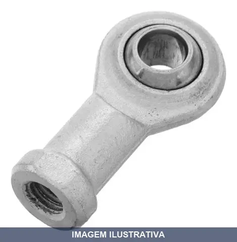
JUNTA ARTICULADA TIPO OLHO DE PEIXE MINI M-PHS RF
JUNTA ARTICULADA TIPO OLHO DE PEIXE M-PHS 12/16 DIAMETRO CILINDRO 12/16MM ROSCA FEMEA M6X1

POLIA ALUMINIO A1 ALUCAL
POLIA DE ALUMINIO 50 A1- 2'' Todos os modelos atendem as normas específicas a cada perfil, para um perfeito acoplamento entre correia e polia. O processo de fabricação, os materiais e o controle de qualidade também são baseados em normas específicas de modo a garantir um produto de elevado desempenho. Os perfis das polias atendem as seguintes normas: ISO 4183 Tratamento Superficial Polia de alumínio não são pintadas. Balanceamento As polias são fornecidas sem balanceamento. Qualidade A inspeção

POLIA ALUMINIO A2 ALUCAL
Indicação de Uso: Polia para correia tipo A2, utilizada em sistemas de transmissão de potência com correias trapezoidais. / Material e Resistência: Fabricada em alumínio, material leve e resistente à corrosão. / Vantagem Prática: Oferece acoplamento preciso com correia A2, reduzindo vibrações e garantindo eficiência na transmissão de movimento.
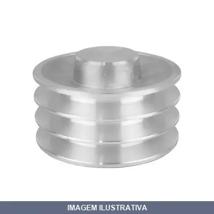
POLIA ALUMINIO A3 ALUCAL
Polia de alumínio com perfil A3, conforme norma ISO 4183. Indicação de Uso: Transmissão de movimento e potência em sistemas com correia trapezoidal. Material e Resistência: Alumínio fundido, sem revestimento de pintura. Vantagem Prática: Leveza, durabilidade e precisão geométrica dos canais para acoplamento eficiente com correias.
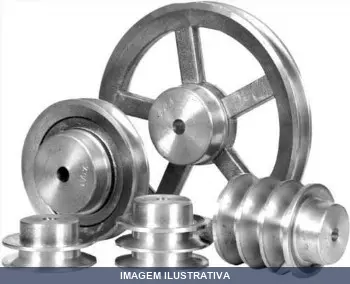
POLIA ALUMINIO B1 ALUCAL
POLIA DE ALUMINIO 70 B1 - 2.3/4'' Todos os modelos atendem as normas específicas a cada perfil, para um perfeito acoplamento entre correia e polia. O processo de fabricação, os materiais e o controle de qualidade também são baseados em normas específicas de modo a garantir um produto de elevado desempenho. Os perfis das polias atendem as seguintes normas: ISO 4183 Tratamento Superficial Polia de alumínio não são pintadas. Balanceamento As polias são fornecidas sem balanceamento. Qualidade A ins

POLIA ALUMINIO B2 ALUCAL
Indicação de Uso: Transmissão de movimento e força em sistemas com correia trapezoidal. / Material e Resistência: Alumínio fundido, leve e resistente à corrosão. / Vantagem Prática: Perfil conforme norma ISO 4183 garante acoplamento preciso com correias. Superfície natural sem pintura facilita manutenção.

POLIA ALUMINIO B3 ALUCAL
POLIA DE ALUMINIO 230 B3 - 9'' Todos os modelos atendem as normas específicas a cada perfil, para um perfeito acoplamento entre correia e polia. O processo de fabricação, os materiais e o controle de qualidade também são baseados em normas específicas de modo a garantir um produto de elevado desempenho. Os perfis das polias atendem as seguintes normas: ISO 4183 Tratamento Superficial Polia de alumínio não são pintadas. Balanceamento As polias são fornecidas sem balanceamento. Qualidade A inspeç
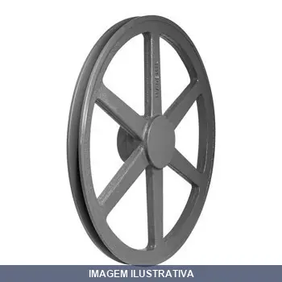
POLIA FERRO A1 MADEMIL
POLIA DE FERRO FUNDIDO 60 A1 Todos os modelos atendem as normas específicas a cada perfil, para um perfeito acoplamento entre correia e polia. O processo de fabricação, os materiais e o controle de qualidade também são baseados em normas específicas de modo a garantir um produto de elevado desempenho. Os perfis das polias atendem as seguintes normas: ISO 4183 Tratamento Superficial As polias de ferro são fornecidas com pintura na cor cinza (Laca Nitro Celulose Cinza Escuro Munsell N3,5). Balance

POLIA FERRO A2 MADEMIL
POLIA DE FERRO FUNDIDO 60 A2 Todos os modelos atendem as normas específicas a cada perfil, para um perfeito acoplamento entre correia e polia. O processo de fabricação, os materiais e o controle de qualidade também são baseados em normas específicas de modo a garantir um produto de elevado desempenho. Os perfis das polias atendem as seguintes normas: ISO 4183 Tratamento Superficial As polias de ferro são fornecidas com pintura na cor cinza (Laca Nitro Celulose Cinza Escuro Munsell N3,5). Balance
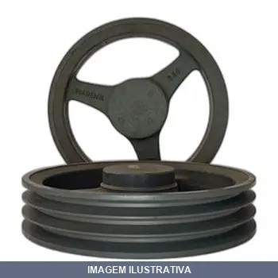
POLIA FERRO A3 MADEMIL
POLIA DE FERRO FUNDIDO 70 A3 Todos os modelos atendem as normas específicas a cada perfil, para um perfeito acoplamento entre correia e polia. O processo de fabricação, os materiais e o controle de qualidade também são baseados em normas específicas de modo a garantir um produto de elevado desempenho. Os perfis das polias atendem as seguintes normas: ISO 4183 Tratamento Superficial As polias de ferro são fornecidas com pintura na cor cinza (Laca Nitro Celulose Cinza Escuro Munsell N3,5). Balance
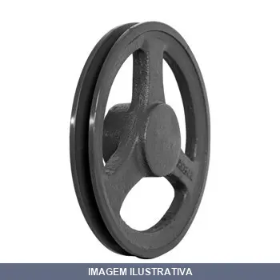
POLIA FERRO B1 MADEMIL
POLIA DE FERRO FUNDIDO 60 B1 Todos os modelos atendem as normas específicas a cada perfil, para um perfeito acoplamento entre correia e polia. O processo de fabricação, os materiais e o controle de qualidade também são baseados em normas específicas de modo a garantir um produto de elevado desempenho. Os perfis das polias atendem as seguintes normas: ISO 4183 Tratamento Superficial As polias de ferro são fornecidas com pintura na cor cinza (Laca Nitro Celulose Cinza Escuro Munsell N3,5). Balance
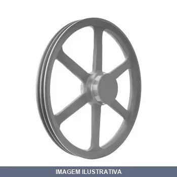
POLIA FERRO B2 MADEMIL
POLIA DE FERRO FUNDIDO 70 B2 Todos os modelos atendem as normas específicas a cada perfil, para um perfeito acoplamento entre correia e polia. O processo de fabricação, os materiais e o controle de qualidade também são baseados em normas específicas de modo a garantir um produto de elevado desempenho. Os perfis das polias atendem as seguintes normas: ISO 4183 Tratamento Superficial As polias de ferro são fornecidas com pintura na cor cinza (Laca Nitro Celulose Cinza Escuro Munsell N3,5). Balance
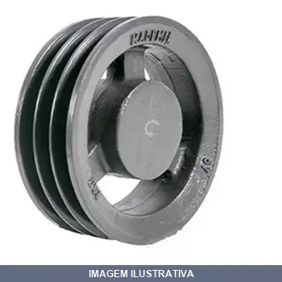
POLIA FERRO B3 MADEMIL
Polia de ferro fundido com perfil B3, conforme norma ISO 4183. Indicação de Uso: transmissão de potência em sistemas com correia em V, adequada para máquinas industriais e equipamentos. Material e Resistência: ferro fundido com acabamento usinado, resistente ao desgaste. Vantagem Prática: proporciona acoplamento preciso entre correia e polia, garantindo eficiência na transmissão de movimento.
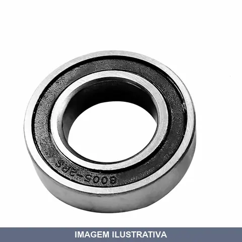
ROLAMENTO COM FLEX LOTUS
Indicação de Uso: Suporte e fixação em estruturas e equipamentos que requerem distribuição de carga. Material e Resistência: Rolamento com capacidade de suportar até 180 kg. Vantagem Prática: Conjunto com 2 peças, reduzindo necessidade de compras adicionais para instalações duplas ou substituição.
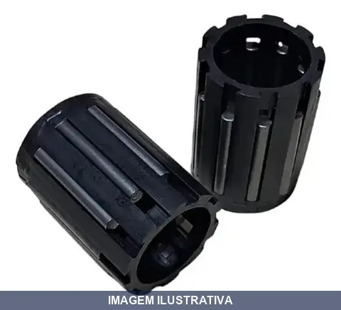
ROLETE DE AGULHA PARA RODA ARO , PRIX LOTUS
Indicação de Uso: Rolete de agulha para rodas industriais e carrinhos de mão, proporcionando movimento suave e preciso. Material e Resistência: Construído em gaiola plástica com agulhas de aço, oferece resistência e durabilidade em operações contínuas. Vantagem Prática: Componente de reposição que garante funcionamento eficiente da roda.